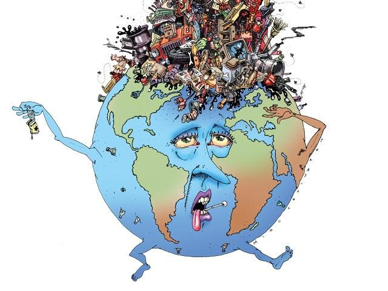
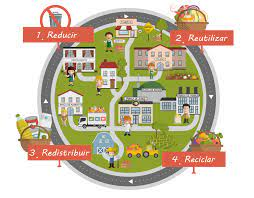

xddd
Redistribuir
xd
Importancia de Redistribuir.
Y ahora que hablamos de consumo colaborativo, la quinta erre que se incorpora es la de Redistribuir, donde pasamos el producto que ya no usamos a alguien que le será de utilidad.
Como veremos en la charla TED de Rachel Botsman, uno de los tipos de consumo colaborativo es el mercado de redistribución, que básicamente se trata de hacer llegar bienes usados de donde ya no se necesitan hacia algún lugar o persona que sí los necesita.

xddddddd
xd
La Distribucion De El Consumo Colaborativo
Tipos de consumo colaborativo serían:
El estilo de vida colaborativo, en el que no sólo se planean compartir o intercambiar bienes materiales. Gente con intereses comunes se están juntando para compartir e intercambiar bienes menos tangibles como tiempo, espacio, habilidades y dinero. Estos intercambios tienen lugar principalmente a nivel local o de barrio, donde se comparten espacios para trabajar (Coworking), cultivar (Huertos Compartidos), la wifi o se presta de dinero entre particulares. A nivel más global, tenemos alquiler de habitaciones a viajeros o simplemente dejar dormir a la gente en tu casa (Couchsurfing)
Los sistemas basados en producto, en los que pagamos por el beneficio de utilizar un producto sin la necesidad de adquirirlo.
Se transforma a las industrias tradicionales basadas en modelos de propiedad privada individual (por ejemplo. compartir coche y alquiler P2P de coches entre usuarios). Estos sistemas atraen cada vez a un mayor número de usuarios y el Bicing sería un ejemplo.

xddddddd